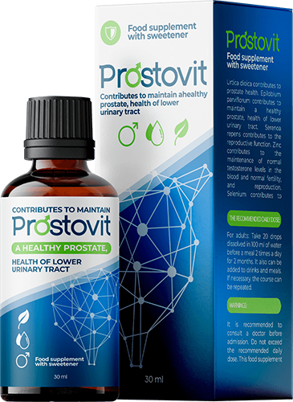

Dyrektor Centrum Onkologii i Prostaty, członek Kolegium Urologicznego, profesor i chirurg Europy i USA. Wykonuje następujące operacje: radykalna prostatektomia z użyciem TURP (przezcewkowa resekcja gruczołu krokowego) prostaty i ablacja laserowa gruczolaków prostaty.
zapalenie prostaty niesie ze sobą różne możliwe problemy dla człowieka, takie jak:
● IMPOTENCJA
● HIPERPLASIA PROSTATYCZNA
●RAK PROSTATY
Zla wiadomość polega na tym że w 96,7% przypadków, mężczyźni cierpią na zapalenie stercza i prędzej czy później dostają impotencję.
Rak prostaty występuje w końcowych stadiach zapalenia gruczołu krokowego, co jest powszechnym wynikiem nieleczonego zapalenia gruczołu krokowego. Mężczyźni, którzy ignorują zapalenie stercza, ryzykują życiem. Jeśli chcesz żyć długo i zdrowo, jeśli potrzebujesz prawidłowej erekcji i normalnego libido, musisz leczyć zapalenie gruczołu krokowego. I powinien to zrobić tak szybko, jak to jest możliwe.
Problem polega na tym, że pomimo faktu, że większość ludzi jest zainteresowana tym problemem, nadal nie idą do lekarza. To wszystko dlatego, że niektórzy ludzie nie uważają zapalenie prostaty za niebezpieczne zjawisko i traktują ten problem tak, jakby był czymś wstydliwym i chce go ukryć. W rezultacie większość pacjentów zapomina o chorobie bez należnej opieki, a kiedy już zdecydują się szukać pomocy (jeśli się zdecydują), często jest za późno, bo rak już zaczął się rozwijać ».
Trzeba zrozumieć zapalenie gruczołu krokowego jest to śmiertelna choroba, która może ulec degeneracji i prowadzić do raka nowotworowego. Nieleczona i źle zdiagnozowana choroba rozwija się szybko i może prowadzić do raka w ciągu zaledwie 1-2 lat, a nawet prowadzi do śmierci pacjenta.
Teraz mężczyźni mają niepowtarzalną okazję, aby raz na zawsze wyleczyć powiększenie gruczołu krokowego i eliminować stan zapalny nawet bez regularnych wizyt w klinice.
W 2016 r. na rynek wychodzi rewolucyjny produkt, który szybko przywraca funkcję prostaty, eliminuje stany zapalne i pomaga przy zapaleniu gruczołu krokowego,nawet w już przewlekłych sytuacjach, a także zwiększa męską siłę i czas trwania stosunku seksualnego. Ten naturalny produkt nazywa się . Jest to wygodny i prosty produkt, można go używać wszędzie, gdzie się znajdujesz, i jest całkowicie dostępny dla każdego mężczyzny. Projekt i badania trwały dwa lata i były prowadzone przez amerykańskich lekarzy.
W tym roku Stowarzyszenie Lekarzy i Chirurgów pomyślnie ukończyło badanie kliniczne produktu nowej generacji , który został stworzony, aby pomóc w leczeniu zapalenia gruczołu krokowego w najbardziej efektywny sposób. Serwis prasowy Instytutu opublikował następujące oświadczenie:
1. okazał się skuteczny w 98% przypadków. Procent był mierzony standardową metodą (liczba mężczyzn z pozytywnymi wynikami w porównaniu do całkowitej liczby pacjentów w grupie z 100 mężczyznach, którzy byli badani).
2. W 96% przypadków po zawieszeniu terapii został zauważony całkowity brak objawów (odsetek uzyskany na podstawie obserwacji przeprowadzonych w ciągu sześciu miesięcy).
3.Po tygodniu stosowania leku wszyscy pacjenci zauważyli znaczny wzrost libido i męskiej siły.
4. W 95% zwiększył się czas trwania stosunku seksualnego.
5. Nie zaobserwowano żadnych efektów ubocznych, ani reakcji alergicznych.
6. okazał się rewolucyjnym produktem i został uznany za jedno z głównych środków w walce z zapaleniem gruczołu krokowego.
Doświadczenie zawodowe - 18 lat. Jest bardzo sławny w swoim świecie, ponieważ jest najlepszym chirurgiem pod względem operacji układu moczowo-płciowego, w tym minimalnie inwazyjnym.
Członek Towarzystwa Urologicznego, Stowarzyszenia Onkologii Urologicznej i Amerykańskiego Stowarzyszenia Urologii (AAU).
Przez długi czas w naszym kraju nie było skutecznego, ale przede wszystkim niedrogiego rozwiązania w leczeniu zapalenia gruczołu krokowego, a to prowadziło do konsekwencji, które są po prostu straszne. Choroba ta rozwinęła się u 45% dorosłej populacji, a jeszcze gorzej u 25% młodych ludzi. to rewolucja w leczeniu zapalenia gruczołu krokowego, prawdziwego panaceum naszych czasów. Skuteczność kropel została przetestowana w praktyce zarówno w USA, jak iw Europie. Wyjątkowa kompozycja i odkrycie żywych komórek przez naukowców robi niezastępowalnym środkiem w walce z zapaleniem gruczołu krokowego.

Produkt został przetestowany, a wyniki były niesamowite. Około 98% pacjentów zostali wyleczeni i choroba nie powróciła. Objawy zniknęły całkowicie, podobnie jak i zapalenie prostaty. W przypadku powrotu choroby po dalszym zastosowaniu objawy zniknęły na zawsze.
Ponadto dzięki połączeniu potężnych składników naturalnych wzmacnia męską siłę i przedłuża czas trwania stosunku seksualnego.
jest to bardzo skutecznym środkiem, ponieważ rozwiązuje problem na go wszystkich etapach. Ma bezprecedensowy efekt terapeutyczny dla całego męskiego układu moczowo-płciowego. W prostych słowach, po przebiegu kursu tego naturalnego leku, męskie ciało zaczyna działać tak, jak u 25-letniego faceta. Dlatego absolutnie polecam ten środek wszystkim. Nawet gdy nie ma zapalenia gruczołu krokowego kurs tego leku, to doskonała profilaktyka i pomoc dla męskiej siły.
Ponadto produkt przeszedł wszystkie kontrole w celu uzyskania najważniejszych certyfikatów. Badania kliniczne w pełni potwierdziły skuteczność produktu.
Drodzy mężczyźni, nie lekceważcie swojego zdrowia. Nie obwiniajcie siebie o impotencję i nie wystawiajcie siebie na niebezpieczeństwo! WARTO PILNOWAĆ SWOJEGO ZDROWIA!
W tej chwili oryginalny środek można zamówić tylko przez oficjalną stronę internetową producenta .
Спасибо !